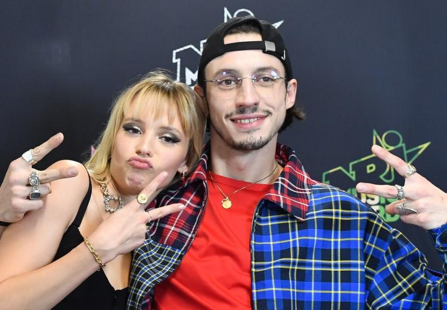
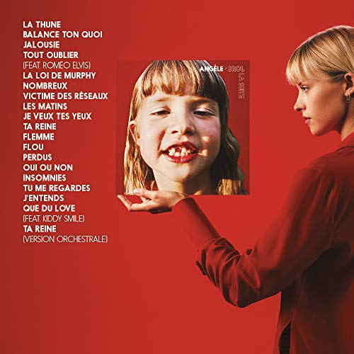

Née à Uccle en Belgique, Angèle Van Laeken, dite Angèle, est une auteure-compositrice-interprète, musicienne et productrice. D'un père musicien et d'une mère commédienne, Angèle a toujours baigné dans le milieu artistique. Son frère ainé, Roméo Van Laeken, plus connu sous le nom de Roméo Elvis, a lui aussi fait son nom dans le monde de la musique, et ce, bien avant qu'elle ne soit sous les feux des projecteurs.
Sorti en 2018, BROL, "bordel" en flamand, est le premier album enregistré par la jeune femme. Il comporte 19 chansons. Chacune d'entre elles évoque un sujet de société, souvent tabou ou polémique, comme le consentement avec "Balance ton quoi", l'argent avec "La Thune", l'homosexualité avec "Ta Reine". L'album a rencontré un succès international et a reçu plusieurs prix tel que celui de l'album révélation de l'année, lors des victoires de la musique, en 2019.
